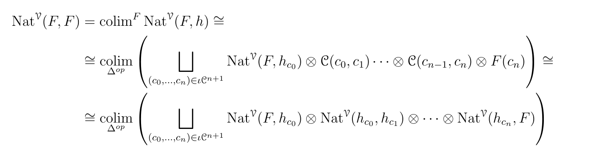

Enriched ∞-categories
According to the Cobordism Hypothesis, framed fully extended topological field theories of dimension n with values in a symmetric monoidal (∞, n)-category C are classified by the fully dualizable objects in C. Hence, in order to construct such extended TFTs, it is important to know what the fully dualizable objects in common target categories, for example the (∞,n)-category of n-vector spaces, are.
In dimension 1, it is a well-known fact that a TFT is determined by its value on a point, given by a finite-dimensional (i.e. dualizable) vector space. Extended TFTs in 2 dimensions (for example, closed topological string theories) are determined by the datum of a special Frobenius algebra, as is extensively worked out in [SP]; actually the 2-category of fully dualizable 2-vector spaces is equivalent to the Morita-category of such special Frobenius algebras. In dimension 3, the fully dualizable objects make up the 3-category of separable tensor categories as shown in [DSPS], and in dimension 4 they should be related to fusion 2-categories.
What happens in arbitrary dimension? An important insight is that categories of dualizable objects often arise as the idempotent completion of a simpler category. For example, dualizable R-modules over a ring R are precisely the finitely generated projective R-modules, i.e. retracts of finitely free R-modules. According to [GJF], fully dualizable 2-vector spaces can similarly be obtained by starting with the 1-category of finite-dimensional vector spaces together with its symmetric monoidal tensor product, delooping it to a one-object 2-category and completing under a lax notion of idempotents, that they call "condensations". Repeating the process of delooping and taking condensations should recover fully dualizable n-categories of n-vector spaces, for any n.
Goal of this project is to formalize and generalize this construction. First of all, one might want to replace the category of vector spaces as a starting point with the category of R-modules over some ring R, super vector spaces, graded vector spaces, or many other examples. Secondly, as we learn e.g. from the BV-formalism, physical state spaces should always be derived, i.e. we should work with chain complexes/ derived categories instead of modules (or equivalently, ring spectra instead of rings)
Since n-vector spaces, and fully dualizable objects in them, form (weak) n-categories, a robust setup for doing higher category theory including universal constructions like colimits, as well as presheaf categories, is necessary for this purpose. In fact, to accomodate the second point, it is even necessary to pass to (∞, n)-categories since the higher morphisms are necessary to capture homotopy coherences of the additional derived information. The setup of choice for this purpose will be the theory of enriched ∞-categories developed in [GH].
In short, one possible model for (∞, n)-categories are ∞-categories enriched in (∞, n-1)-categories, which makes sense inductively. Similarly, n-categories are ∞-categories enriched in (n-1)-categories. There exist suitable notions of weighted colimits and enriched presheaf categories in this context; and the theory of lax idempotent completions required for the above constructions relies on a notion of Cauchy completion for enriched ∞-categories, whose properties and many examples of which will be studied in this project. Once this is done, the hope is that starting with an E_n-algebra R in a (presentably) E_n-monoidal ∞-category V and iteratively delooping and Cauchy-completing it n times, one obtains a fully dualizable V-enriched (∞,n)-category. In particular, for R the complex numbers and V the 1-category of abelian groups, this should be the n-categoriey of fully dualizable n-vector spaces.
As (lax) idempotent completions and Cauchy completions are often hard to compute and understand, another goal is to develop tools to do precisely that. This includes explicitly working out certain weighted colimits, developing an ∞-categorical enriched profunctor calculus, and studying dualizability properties of Cauchy-complete enriched ∞-categories like smoothness and properness by translating between the worlds of small and presentable enriched ∞-categories.
The final results concerning full dualizability in n-vector spaces will hopefully allow for the construction of new classes of extended field theories including various kinds of derived information (hence, particularly examples of non-semisimple theories). This involves defining, and studying, higher analogues of fusion-categories. Also, a better understanding of state-sums and their relation to the defect foam construction might be obtained from this abstract point of view.
[GH] Gepner, Haugseng, "Enriched ∞-Categories via non-symmetric ∞-Operads", 2015
[GJF] Gaiotto, Johnson-Freyd, "Condensations in Higher Categories", 2019
[SP] Christopher Schommer-Pries, "The Classification of Two-Dimensional Extended Topological Field Theories", 2014
[DSPS] Douglas, C Schommer-Pries, N Snyder, "Dualizable Tensor Categories", 2020